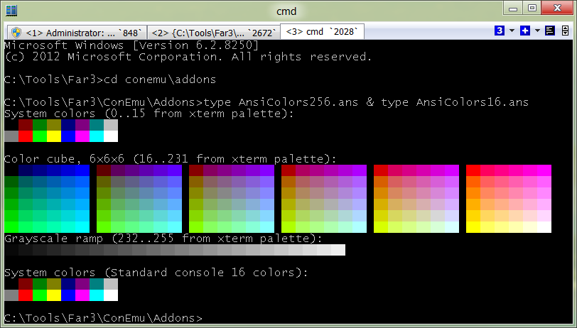

ANSI X3.64 и Xterm 256
Поддержка ANSI X3.64 и его расширения xterm 256 color mode встроена в ConEmu начиная с версии 120520d.
- Описание
- Список поддерживаемых кодов
- Примеры
Описание
Опция «ANSI X3.64 / xterm 256 colors» на вкладке «Features», по умолчанию включена. Адресуется консоль целиком (с прокруткой), но xterm 256 color влияет только на «рабочую» область (нижняя часть консоли, если есть прокрутка). Вне «рабочей» области 256 цветов аппроксимируются к стандартным 16-и консольным цветам.
Для обработки ANSI последовательностей
- Должны быть включены флажки
Для режима xterm 256 color
- Должны быть включены флажки
- «TrueMod (24bit color) support» на вкладке Colors
- «ANSI X3.64 / xterm 256 colors» на вкладке Features
- «Inject ConEmuHk» на вкладке Features (требуется для обработки программ второго уровня)
- проверить выключен ли буфер/прокрутка.
Пример 1: Vim
vim.exe -cur_console:h0 <Vim arguments here>
Пример 2: 256colors2.pl
Скрипт 256colors2.pl нужно запускать так:
256colors2.pl -cur_console:h0
Пример 3: прокрутить консоль
Если приложение не «полноэкранное» (вроде Far/Vim/Hiew/...), можно прокрутить консоль в самый низ («^[» нужно заменить на ESC код - символ с кодом \x1B):
echo ^[[9999;1H
TechInfo
Обработка ANSI escape последовательностей осуществляется в том случае, если консольная программа использует для вывода функции WriteConsoleA, WriteConsoleW или WriteFile. Например:
cmd /c type "Colors-256.ans"
Вывод текста с текущими расширенными атрибутами (xterm 256 color) возможен также функциями WriteConsoleOutputCharacterA и WriteConsoleOutputCharacterW.
Переменная окружения
Как проверить в cmd-файле или консольном приложении разрешено ли ANSI x3.64? Проверить значение переменной окружения «ConEmuANSI»
if "%ConEmuANSI%"=="ON" echo Разрешено
if "%ConEmuANSI%"=="OFF" echo Запрещено
Список поддерживаемых кодов
CSI (Control Sequence Initiator) codes
| ESC [ lines A | Moves cursor up by lines lines (1 by default) |
| ESC [ lines B | Moves cursor down by lines lines (1 by default) |
| ESC [ cols C | Moves cursor rightward by cols columns (1 by default) |
| ESC [ cols D | Moves cursor leftward by cols columns (1 by default) |
| ESC [ lines E | Moves cursor to beginning of the line, lines (default 1) lines down. |
| ESC [ lines F | Moves cursor to beginning of the line, lines (default 1) lines up. |
| ESC [ col G | Moves the cursor to column col (absolute, 1-based). |
| ESC [ row ; col H | Set cursor position. The values row and col are 1-based. |
| ESC [ n J | Erase display. When n is 0 or missing: from cursor to end of display). When n is 1: erase from start to cursor. When n is 2: erase whole display and moves cursor to upper-left corner. |
| ESC [ n K | Erase line. When n is 0 or missing: from cursor to end of line. When n is 1: erase from start of line to cursor. When n is 2: erase whole line and moves cursor to first column. |
| ESC [ n L | Insert n (default 1) lines before current, scroll part of screen from current line to bottom. |
| ESC [ n M | Delete n (default 1) lines including current. |
| ESC [ lines S | Scroll screen (whole buffer) up by lines. New lines are added at the bottom. |
| ESC [ lines T | Scroll screen (whole buffer) down by lines. New lines are added at the top. |
| ESC [ row ; col f | Set cursor position (same as H). The values row and col are 1-based. |
| ESC [ a ; b h | Set mode (see below). |
| ESC [ a ; b l | Reset mode (see below). |
| ESC [ a ; b ; c m | Set SGR attributes (see below). |
| ESC [ a ; b r | Set scrolling region from top=a to bottom=b. The values a and b are 1-based. Omit values to reset region. |
| ESC [ s | Save cursor position (can not be nested). |
| ESC [ u | Restore cursor position. |
Terminal modes
| ESC [ 7 ; col h | Enables line wrapping at column position. If col (1-based) is absent, wrap at column 80. |
| ESC [ 7 l | Disables line wrapping. Lines wraps at the end of screen buffer. |
| ESC [ 25 h | Show text cursor. |
| ESC [ 25 l | Hide text cursor. |
SGR (Select Graphic Rendition) parameters
| 0 | Reset current attributes |
| 1 | Set BrightOrBold |
| 2 | Unset BrightOrBold |
| 3 | Set ItalicOrInverse |
| 4 | Set BackOrUnderline |
| 5 | Set BackOrUnderline |
| 30…37 | Set ANSI text color |
| 38 ; 5 ; n | Set xterm text color, n is color index from 0 to 255 |
| 39 | Reset text color to defauls |
| 40…47 | Set ANSI background color |
| 48 ; 5 ; n | Set xterm background color, n is color index from 0 to 255 |
| 49 | Reset background color to defauls |
OSC (Operating system commands)
Note. These codes may ends with «ESC\» (two symbols - ESC and BackSlash) or «BELL» (symbol with code \x07, same as «^a» in *nix). For simplifying, endings in the following table marked as «ST».
| ESC ] 2 ; "txt" ST | Set console window title to txt. |
ConEmu specific OSC
| ESC ] 9 ; 1 ; ms ST | Sleep. ms - number, milliseconds. |
| ESC ] 9 ; 2 ; "txt" ST | Show GUI MessageBox ( txt ) for any purposes. |
| ESC ] 9 ; 3 ; "txt" ST | Change ConEmu Tab to txt. Set empty string to return original Tab text. |
| ESC ] 9 ; 4 ; st ; pr ST | Set progress state on Windows 7 taskbar and ConEmu title. When st is 0: remove progress. When st is 1: set progress value to pr (number, 0-100). When st is 2: set error state in progress on Windows 7 taskbar. |
| ESC ] 9 ; 5 ST | Wait for Enter/Space/Esc. Set environment variable "ConEmuWaitKey" to "ENTER"/"SPACE"/"ESC" on exit. |
| ESC ] 9 ; 6 ; "txt" ST | Execute GuiMacro ( txt ). Set EnvVar "ConEmuMacroResult" on exit. |
| ESC ] 9 ; 7 ; "cmd" ST | Run some process with arguments. |
| ESC ] 9 ; 8 ; "env" ST | Output value of environment variable. |
Примеры
ANSI and xterm color maps

Xterm 256 color map
Пример из файла: ConEmu\Addons\AnsiColors256.ans.
^[[9999S^[[9999;1HSystem colors (0..15 from xterm palette):
^[[48;5;0m ^[[48;5;1m ^[[48;5;2m ^[[48;5;3m ^[[48;5;4m ^[[48;5;5m ^[[48;5;6m ^[[48;5;7m ^[[0m
^[[48;5;8m ^[[48;5;9m ^[[48;5;10m ^[[48;5;11m ^[[48;5;12m ^[[48;5;13m ^[[48;5;14m ^[[48;5;15m ^[[0m
Color cube, 6x6x6 (16..231 from xterm palette):
^[[48;5;16m ^[[48;5;17m ^[[48;5;18m ^[[48;5;19m ^[[48;5;20m ^[[48;5;21m ^[[0m ^[[48;5;52m ^[[48;5;53m ^[[48;5;54m ^[[48;5;55m ^[[48;5;56m ^[[48;5;57m ^[[0m ^[[48;5;88m ^[[48;5;89m ^[[48;5;90m ^[[48;5;91m ^[[48;5;92m ^[[48;5;93m ^[[0m ^[[48;5;124m ^[[48;5;125m ^[[48;5;126m ^[[48;5;127m ^[[48;5;128m ^[[48;5;129m ^[[0m ^[[48;5;160m ^[[48;5;161m ^[[48;5;162m ^[[48;5;163m ^[[48;5;164m ^[[48;5;165m ^[[0m ^[[48;5;196m ^[[48;5;197m ^[[48;5;198m ^[[48;5;199m ^[[48;5;200m ^[[48;5;201m ^[[0m
^[[48;5;22m ^[[48;5;23m ^[[48;5;24m ^[[48;5;25m ^[[48;5;26m ^[[48;5;27m ^[[0m ^[[48;5;58m ^[[48;5;59m ^[[48;5;60m ^[[48;5;61m ^[[48;5;62m ^[[48;5;63m ^[[0m ^[[48;5;94m ^[[48;5;95m ^[[48;5;96m ^[[48;5;97m ^[[48;5;98m ^[[48;5;99m ^[[0m ^[[48;5;130m ^[[48;5;131m ^[[48;5;132m ^[[48;5;133m ^[[48;5;134m ^[[48;5;135m ^[[0m ^[[48;5;166m ^[[48;5;167m ^[[48;5;168m ^[[48;5;169m ^[[48;5;170m ^[[48;5;171m ^[[0m ^[[48;5;202m ^[[48;5;203m ^[[48;5;204m ^[[48;5;205m ^[[48;5;206m ^[[48;5;207m ^[[0m
^[[48;5;28m ^[[48;5;29m ^[[48;5;30m ^[[48;5;31m ^[[48;5;32m ^[[48;5;33m ^[[0m ^[[48;5;64m ^[[48;5;65m ^[[48;5;66m ^[[48;5;67m ^[[48;5;68m ^[[48;5;69m ^[[0m ^[[48;5;100m ^[[48;5;101m ^[[48;5;102m ^[[48;5;103m ^[[48;5;104m ^[[48;5;105m ^[[0m ^[[48;5;136m ^[[48;5;137m ^[[48;5;138m ^[[48;5;139m ^[[48;5;140m ^[[48;5;141m ^[[0m ^[[48;5;172m ^[[48;5;173m ^[[48;5;174m ^[[48;5;175m ^[[48;5;176m ^[[48;5;177m ^[[0m ^[[48;5;208m ^[[48;5;209m ^[[48;5;210m ^[[48;5;211m ^[[48;5;212m ^[[48;5;213m ^[[0m
^[[48;5;34m ^[[48;5;35m ^[[48;5;36m ^[[48;5;37m ^[[48;5;38m ^[[48;5;39m ^[[0m ^[[48;5;70m ^[[48;5;71m ^[[48;5;72m ^[[48;5;73m ^[[48;5;74m ^[[48;5;75m ^[[0m ^[[48;5;106m ^[[48;5;107m ^[[48;5;108m ^[[48;5;109m ^[[48;5;110m ^[[48;5;111m ^[[0m ^[[48;5;142m ^[[48;5;143m ^[[48;5;144m ^[[48;5;145m ^[[48;5;146m ^[[48;5;147m ^[[0m ^[[48;5;178m ^[[48;5;179m ^[[48;5;180m ^[[48;5;181m ^[[48;5;182m ^[[48;5;183m ^[[0m ^[[48;5;214m ^[[48;5;215m ^[[48;5;216m ^[[48;5;217m ^[[48;5;218m ^[[48;5;219m ^[[0m
^[[48;5;40m ^[[48;5;41m ^[[48;5;42m ^[[48;5;43m ^[[48;5;44m ^[[48;5;45m ^[[0m ^[[48;5;76m ^[[48;5;77m ^[[48;5;78m ^[[48;5;79m ^[[48;5;80m ^[[48;5;81m ^[[0m ^[[48;5;112m ^[[48;5;113m ^[[48;5;114m ^[[48;5;115m ^[[48;5;116m ^[[48;5;117m ^[[0m ^[[48;5;148m ^[[48;5;149m ^[[48;5;150m ^[[48;5;151m ^[[48;5;152m ^[[48;5;153m ^[[0m ^[[48;5;184m ^[[48;5;185m ^[[48;5;186m ^[[48;5;187m ^[[48;5;188m ^[[48;5;189m ^[[0m ^[[48;5;220m ^[[48;5;221m ^[[48;5;222m ^[[48;5;223m ^[[48;5;224m ^[[48;5;225m ^[[0m
^[[48;5;46m ^[[48;5;47m ^[[48;5;48m ^[[48;5;49m ^[[48;5;50m ^[[48;5;51m ^[[0m ^[[48;5;82m ^[[48;5;83m ^[[48;5;84m ^[[48;5;85m ^[[48;5;86m ^[[48;5;87m ^[[0m ^[[48;5;118m ^[[48;5;119m ^[[48;5;120m ^[[48;5;121m ^[[48;5;122m ^[[48;5;123m ^[[0m ^[[48;5;154m ^[[48;5;155m ^[[48;5;156m ^[[48;5;157m ^[[48;5;158m ^[[48;5;159m ^[[0m ^[[48;5;190m ^[[48;5;191m ^[[48;5;192m ^[[48;5;193m ^[[48;5;194m ^[[48;5;195m ^[[0m ^[[48;5;226m ^[[48;5;227m ^[[48;5;228m ^[[48;5;229m ^[[48;5;230m ^[[48;5;231m ^[[0m
Grayscale ramp (232..255 from xterm palette):
^[[48;5;232m ^[[48;5;233m ^[[48;5;234m ^[[48;5;235m ^[[48;5;236m ^[[48;5;237m ^[[48;5;238m ^[[48;5;239m ^[[48;5;240m ^[[48;5;241m ^[[48;5;242m ^[[48;5;243m ^[[48;5;244m ^[[48;5;245m ^[[48;5;246m ^[[48;5;247m ^[[48;5;248m ^[[48;5;249m ^[[48;5;250m ^[[48;5;251m ^[[48;5;252m ^[[48;5;253m ^[[48;5;254m ^[[48;5;255m ^[[0m
Warning Перед использованием «^[» нужно заменить на ESC код (символ с кодом \x1B).
Standard ANSI color map
Пример из файла: ConEmu\Addons\AnsiColors16.ans.
System colors (Standard console 16 colors):
^[[0;30;40m ^[[0;30;41m ^[[0;30;42m ^[[0;30;43m ^[[0;30;44m ^[[0;30;45m ^[[0;30;46m ^[[0;30;47m ^[[0m
^[[0;30;4;40m ^[[0;30;4;41m ^[[0;30;4;42m ^[[0;30;4;43m ^[[0;30;4;44m ^[[0;30;4;45m ^[[0;30;4;46m ^[[0;30;4;47m ^[[0m
Warning Перед использованием «^[» нужно заменить на ESC код (символ с кодом \x1B).
sixteencolors.net
Большой архив ANSI арта: http://sixteencolors.net/
Скачать файл ans, и выполнить в консоли ConEmu, например type TK-FREES.ANS. Посмотреть и пролистать предыдущий вывод можно перейдя в альтернативный режим - Win+A.
Note Многие арты расчитаны на ширину консоли в 80 символов.
Подсветка ошибок компиляции
nmake | sed -e "s/.* : \bERR.*/^[[1;31;40m&^[[0m/i" -e "s/.* : \bWARN.*/^[[1;36;40m&^[[0m/i"
или
type "Errors.log" | sed -e "s/.* : \bERR.*/^[[1;31;40m&^[[0m/i" -e "s/.* : \bWARN.*/^[[1;36;40m&^[[0m/i"
Warning Перед использованием «^[» нужно заменить на ESC код (символ с кодом \x1B).
Текстовый Progressbar в cmd-файлах
test_bar.cmd @Artyom.Vorobets